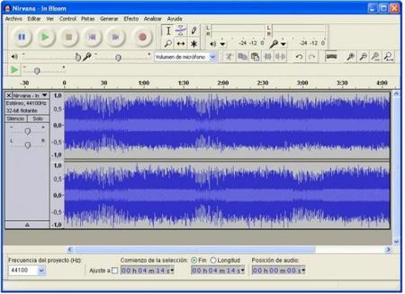

Una vez realizados los tutoriales propuestos el usuario debería ser capaz de ser un usuario independiente en la aplicación Audacity y de tener una idea bastante clara sobre la edición de sonido.
Gracias a este curso el usuario podrá realizar acciones desde editar una canción que le guste hasta editar la melodía de un anuncio profesional. Esta aplicación tiene una gran funcionalidad, sirve tanto para divertirse y aprender edición como para un entorno laboral y profesional.
Además también gracias a lo aprendido el usuario debería ser capaz de trabajar con aplicaciones de edición de sonido similares aunque por sus características la más recomendable en mi opinión es Audacity.
